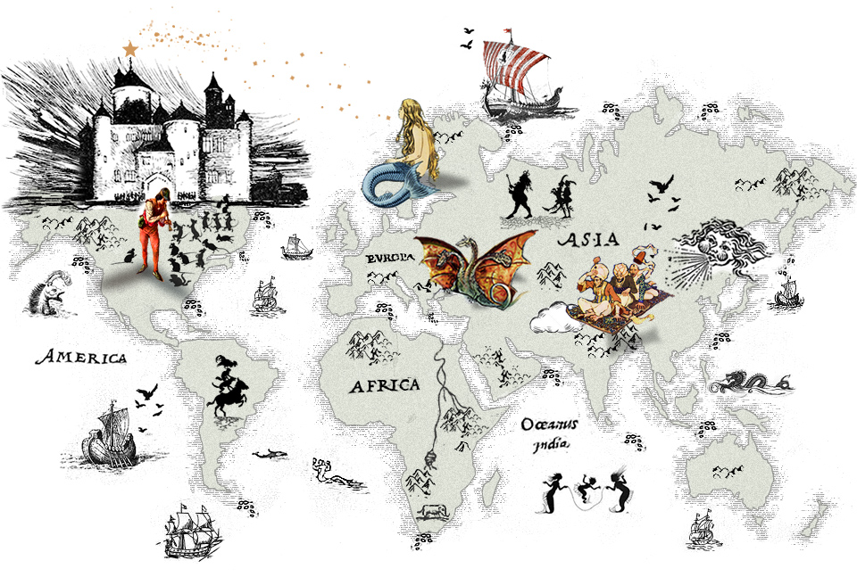

RStudio
Topic Modeling
This work analyzes the relationship between the political discourse of the main Spanish parties and the priorities expressed by citizens through techniques of Topic Modeling. 🗳️

RStudio
Topic Modeling
This work identifies universal thematic patterns among folk tales from around the world, assessing whether certain topics appear consistently in different regions. 🐉

RStudio
Sentiment Analysis
This work focuses on analyzing the relationship between the emotions expressed in song lyrics and their musical characteristics, with the aim of understanding how certain musical elements can influence the emotional perception of listeners. 🎶

RStudio
Web Scrapping
Shiny App
An interactive application is being developed that allows users to view on a map the location of each incident recorded by 911 calls in Monroe County, NY, in real time, along with the route to the nearest hospital and police station. 🚑

RStudio
Data Cleaning
This work develops a complete workflow for cleaning and preparing the ATUS survey, with the aim of analyzing in an integrated manner the dimensions of activity, sex, age and status. ⌚

RStudio
Spatial Analysis
This paper analyzes the impact of gun culture in the United States at the state level, using the rate of gun ownership and the political affiliation of the governing party in each state as proxies. 🔫